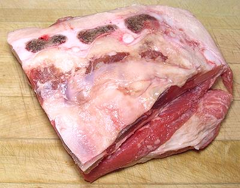
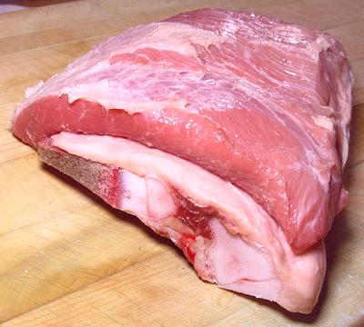

The Veal Breast region is equivalent to the combined Brisket and Plate region of the beef chart. The Veal Breast, because of its much more manageable size, is treated entirely differently from the beef brisket. It is usually sold bone-in, and, though just roasting it works fine, it is a favorite for stuffing. This is done by partially separating the meat from the bones and slipping the stuffing in between.
The photo specimen was 7-1/2 inches long, 7 inches wide and 2-1/4 inches thick. It was purchased for 2012 US $2.49 per pound, probably on sale, 'cause I'm real cheap.
More on Cuts of Veal.

This is a view of the veal breast roast from the bone side. It should
be cut quite flat on this side.

This is another view, bone side down, showing a view of the end where
the stuffing separation would be made.